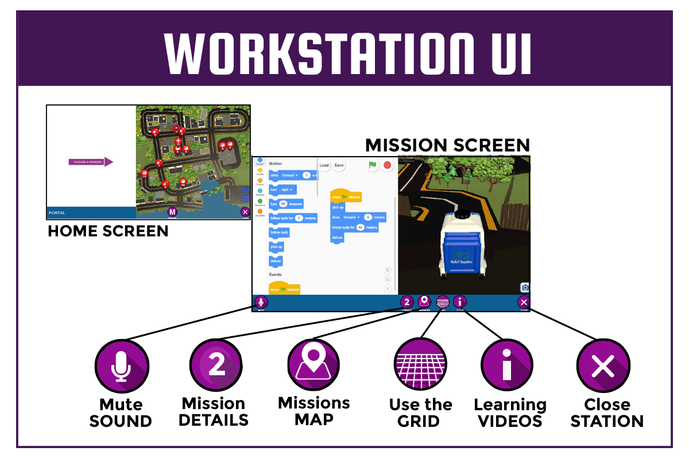

Be a first responder and help with the next big hurricane in San Juan, Puerto Rico. In this game you will use code blocks to control robots and drones to prepare for the storm and respond after it hits.
Your avatar will start in the training complex, a large room with four control tables. Each table has four workstations. As you move around the training complex, you'll see a team numbers (1 - 4) above the control tables. Each team can work on missions independently. As part of a team, players can collaborate, writing code together or alternating who controls a remotely operated robot.

Walk up to a workstation and click on it to get started. At a workstation, you can choose missions to help people prepare for the hurricane or help them after the hurricane arrives.
Each robot has a number of camera views. You can select the camera that is most useful for your mission.
The grid can be helpful to determine the distance in meters between two locations. It can also be used to determine coordinates for flying drones.